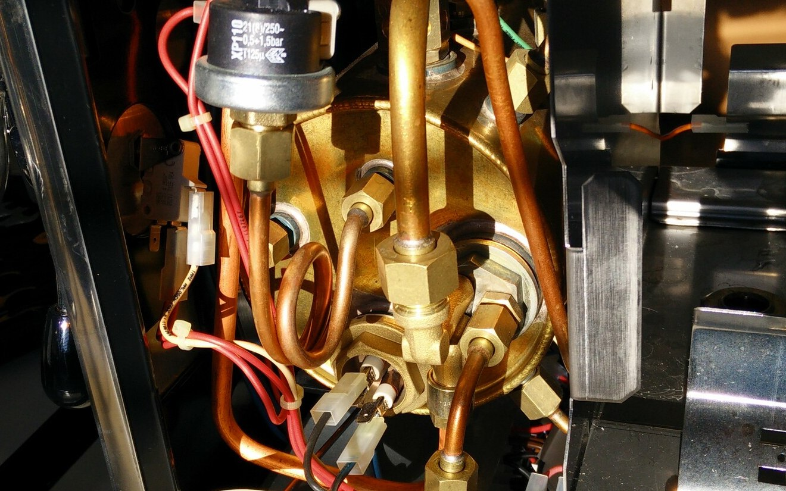

back to main page — COMP 526 Applied Algorithmics
Unit 1: Machines & Models
 This unit covers
- algorithm analysis
- the random-access-machine model
- asymptotic approximations, Big-Oh notation
Learning outcomes
- Understand the difference between empirical running time and algorithm analysis.
- Understand worst/best/average case models for input data.
- Know the RAM model.
- Know the definitions of asymptotic notation (Big-Oh classes and relatives).
- Understand the reasons to make asymptotic approximations.
- Be able to analyze simple algorithms.
Material
Further reading and sources
The RAM model is explained in more detail here: